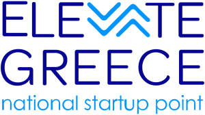
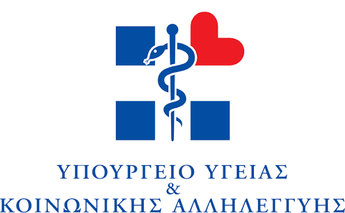
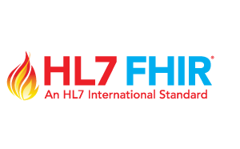
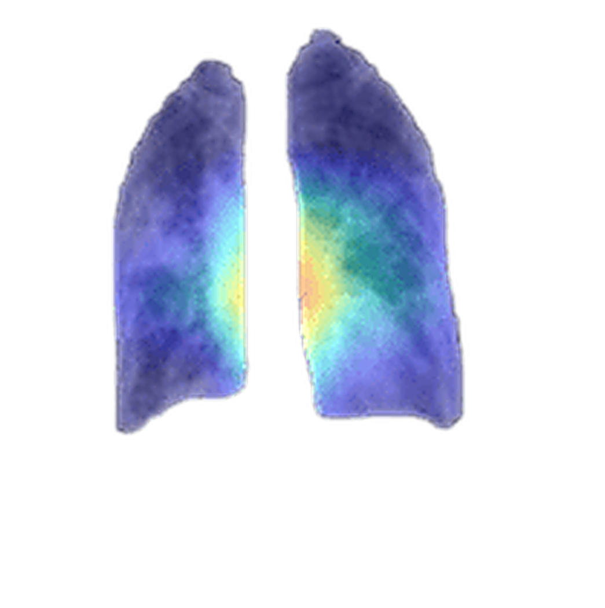
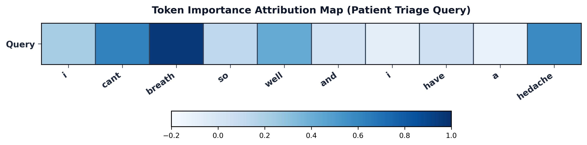

The First 100% On-Device AI Diagnostic Copilot for Ο Πρώτος 100% On-Device AI Διαγνωστικός Βοηθός για Emergency Departments Τμήματα Επειγόντων Περιστατικών
Delivering real-time fusion of DICOM imaging, NLP clinical notes, and patient history. Processed entirely within your hospital LAN with zero cloud egress. Σύντηξη σε πραγματικό χρόνο απεικόνισης DICOM, κλινικών σημειώσεων NLP και ιστορικού ασθενούς. Επεξεργασία αποκλειστικά εντός του νοσοκομειακού LAN με μηδενική έξοδο στο cloud.
Multi-center clinical validation cohort Πολυκεντρική ομάδα κλινικής επικύρωσης
Across Greek public hospital networks Σε ελληνικά δημόσια νοσοκομεία
Mitigates Clinical Fatigue & Critical Omissions Μείωση κλινικής κόπωσης & παραλείψεων
100% On-Device Sovereignty • Zero Cloud Egress 100% On-Device Κυριαρχία • Μηδενικό Cloud



Reinventing Emergency Diagnostics Επανεφεύρεση Επείγουσας Διάγνωσης
Objective measurement tools have been utilized in almost every medical field for centuries. Now is the time to bring them into emergency diagnostics. Εργαλεία αντικειμενικής μέτρησης χρησιμοποιούνται σχεδόν σε κάθε ιατρικό τομέα εδώ και αιώνες. Τώρα είναι η ώρα να τα εισάγουμε στις επείγουσες διαγνώσεις.
MEASUREMENT ΕΞΕΛΙΞΗ ΕΠΙΣΤΗΜΟΝΙΚΗΣ
ΜΕΤΡΗΣΗΣ
Empowering Clinicians When Moments Matter Most Ενδυναμώνοντας τους Κλινικούς Όταν Κάθε Στιγμή Μετράει
See how ZenithDx On-Device AI transforms emergency department triage from cognitive overload to calm, precision clinical judgment. Δείτε πώς το On-Device AI της ZenithDx μεταμορφώνει τη διαλογή ΤΕΠ από νοητική υπερφόρτωση σε ήρεμη, κλινική ακρίβεια.
TRADITIONAL ER WORKFLOW ΠΑΡΑΔΟΣΙΑΚΗ ΡΟΗ ΕΡΓΑΣΙΑΣ ΤΕΠ
Fragmented systems, high mental workload, and delayed clinical handoffs Κατακερματισμένα συστήματα, υψηλός φόρτος εργασίας και καθυστερήσεις
- cancel Overwhelming data fragmented across LIS, RIS, and EHR notes Υπερβολικά δεδομένα διασκορπισμένα σε LIS, RIS και σημειώσεις EHR
- cancel High cognitive fatigue causing diagnostic omission risks Υψηλή γνωστική κόπωση που προκαλεί κινδύνους διαγνωστικών παραλείψεων
- cancel Manual triage scoring creating emergency department bottlenecks Χειροκίνητη βαθμολόγηση διαλογής που δημιουργεί συμφόρηση στα ΤΕΠ
WITH ZENITHDX CLINICAL COPILOT ΜΕ ΤΟ ZENITHDX CLINICAL COPILOT
Unified multimodal fusion, explainable AI & sub-2.8s edge inference Ενοποιημένη πολυτροπική σύντηξη, εξηγήσιμη AI & τοπική εκτέλεση < 2.8s
- check_circle Real-time fusion of DICOM, clinical notes & EHR telemetry Σύντηξη πραγματικού χρόνου DICOM, κλινικών σημειώσεων & τηλεμετρίας EHR
- check_circle Sub-2.8s on-device inference with zero cloud latency or egress Εκτέλεση on-device < 2.8s με μηδενική καθυστέρηση cloud και καμία διαρροή
- check_circle Transparent Dual Explainable AI (XAI) heatmaps & feature scores Διαφανείς χάρτες θερμότητας Dual Explainable AI (XAI) & βαθμολογίες
From Arrival to Answer: How ZenithDx Supports Every ER Decision Από την Άφιξη στη Διάγνωση: Πώς το ZenithDx Υποστηρίζει Κάθε Απόφαση στο ΤΕΠ
One connected journey from the moment a patient arrives to the moment the doctor signs off, built for hospital networks that need speed, clarity, and full control over every diagnosis. Μία ενιαία διαδρομή από τη στιγμή που φτάνει ο ασθενής μέχρι την τελική υπογραφή του ιατρού, σχεδιασμένη για νοσοκομεία που απαιτούν ταχύτητα, διαφάνεια και απόλυτο έλεγχο.
Smart Triage Insights Smart Triage Insights
Before the physician even opens the patient's file, ZenithDx quietly pulls together the vital signs, the chest X-ray, and the medical history into one clear picture, cutting down the mental workload the moment a case lands on the doctor's desk. Πριν καν ανοίξει ο ιατρός τον φάκελο του ασθενούς, το ZenithDx συνθέτει αθόρυβα τα ζωτικά σημεία, την ακτινογραφία θώρακα και το ιατρικό ιστορικό σε μια ενιαία εικόνα, μειώνοντας το νοητικό φορτίο τη στιγμή που το περιστατικό φτάνει στο γραφείο του.
A Fast, Transparent Second Opinion Ταχεία & Διαφανής Δεύτερη Γνώμη στο Κρεβάτι
During the busiest hours in the ER, tired eyes and stretched staff raise the risk of missing something. ZenithDx reviews each case step by step, verifies its own reasoning, and proposes a diagnosis with over 96% accuracy on real mixed cases (imaging, symptoms, and clinical history). And it never just hands over an answer: it shows its work, highlighting exactly which part of the X-ray and which words in the patient's own description led to that conclusion. Τις ώρες αιχμής στο ΤΕΠ, η κόπωση και η πίεση αυξάνουν τον κίνδυνο διαγνωστικής παράλειψης. Το ZenithDx αξιολογεί κάθε περιστατικό βήμα προς βήμα, επαληθεύει τα συμπεράσματά του και προτείνει διάγνωση με ακρίβεια άνω του 96% σε πραγματικά περιστατικά (απεικόνιση, συμπτώματα και ιστορικό). Και ποτέ δεν δίνει απλά μια απάντηση: αποδεικνύει το σκεπτικό του, αναδεικνύοντας ακριβώς ποιο σημείο της ακτινογραφίας και ποια συμπτώματα οδήγησαν στη διάγνωση.
Human in Command, Every Time Ο Ιατρός Έχει Πάντα τον Τελικό Λόγο
However confident the system is, the treating physician always makes the final call, accepting, adjusting, or overriding the finding. Once approved, a complete report is generated automatically and securely logged, ready to flow straight into the patient's hospital record. Όσο βέβαιο κι αν είναι το σύστημα, ο θεράπων ιατρός λαμβάνει πάντοτε την τελική απόφαση, αποδεχόμενος, τροποποιώντας ή απορρίπτοντας το εύρημα. Μόλις εγκριθεί, παράγεται αυτόματα πλήρης δομημένη αναφορά με αδιάβλητη καταγραφή, έτοιμη να ενσωματωθεί άμεσα στον φάκελο του ασθενούς.
Voices of Clinical Leadership & Frontline Practice Φωνές Κλινικής Ηγεσίας & Μάχιμης Ιατρικής Πράξης
Bridging executive academic oversight with frontline double-blind clinical validation (N=121 physicians). Σύνδεση ακαδημαϊκής επιστημονικής εποπτείας με τη διπλή-τυφλή κλινική αξιολόγηση 121 μάχιμων ιατρών.
“ZenithDx stands out as a truly human-centered breakthrough, thanks to Filippos's profound understanding of high-pressure clinical workflows. In the emergency department, his system provides the immediate, auditable insights we need to make critical decisions with absolute confidence. Filippos hasn't just built software; he's architected a regulatory-compliant safety layer that supports the physician exactly when it matters most.”

Dr. Katerina Podara
Resident Physician in General Medicine
“Working with Filippos on the clinical validation of ZenithDx was an exceptional experience. He has engineered a tool that is not only medically precise but remarkably intuitive for frontline physicians. The system's ability to provide clear diagnostic guidance—paired with Filippos's deep commitment to explainable AI transparency—makes ZenithDx a vital partner in modern clinical practice. His technical leadership ensures that our decisions are backed by both data and clarity.”

Dr. Ioanna Marlafeka
Resident Physician in Internal Medicine, MSc, PhD(c)
“Mr. Zygouris impressed me with his professionalism, discipline, and innovative algorithmic thinking. He delivered efficient and original solutions in end-to-end architecture (AI, Cloud, Data) and implemented a human-centered AI co-pilot. His integration of Explainable AI (XAI) frameworks significantly enhanced transparency and user trust. His contribution was pivotal, and I recommend him unreservedly.”
Prof. Christos Makris
Associate Professor, University of Patras
“The ability to see exactly which region of the chest X-ray drove the diagnostic proposal via Grad-CAM gives me the feeling of having a second, fully transparent radiologist right beside me at the bedside.”
Resident Physician in Internal & Emergency Medicine
Anonymous Participant (Double-Blind Hospital Trial, N=121)
“ZenithDx doesn't interrupt my clinical flow; it integrates naturally and empowers me to review, adjust, and approve the diagnostic proposal in mere seconds.”
Emergency Department Attending Physician
Anonymous Participant (Double-Blind Hospital Trial, N=121)
“Less Friction, Saved Time, Better Care.” «Λιγότερη γραφειοκρατία. Ταχύτερη κλινική φροντίδα.»
Shifting the focus from technical risk descriptions to tangible human benefit: returning precious time to frontline emergency physicians for compassionate, bedside clinical care. Μετάβαση από την απλή περιγραφή τεχνικών κινδύνων στο ουσιαστικό ανθρώπινο όφελος: επιστροφή του πολύτιμου χρόνου στους ιατρούς για ουσιαστική, δια ζώσης επικοινωνία και φροντίδα του ασθενούς.
Patient & Triage Nurse Interface Διεπαφή Ασθενούς & Νοσηλευτή
Rapid, frictionless symptom input and automated multivariable linkage in under 26 seconds. Ταχύτατη, αβίαστη εισαγωγή συμπτωμάτων και αυτόματη σύνδεση δεδομένων σε κάτω από 26 δευτερόλεπτα.
Physician Review, Edit & Gated Sign-Off Έλεγχος Ιατρού & Υπογραφή
Complete multi-modal diagnosis inspection and 1-click structured EHR report finalization. Πλήρης επιθεώρηση πολυτροπικής διάγνωσης και 1-click οριστικοποίηση δομημένης αναφοράς.
Book a Meeting
Partner with us to shape the future of sovereign Emergency Clinical Intelligence. Schedule an on-site clinical discussion or request a 30-day shadow pilot with our medical AI experts. Συνεργαστείτε μαζί μας για το μέλλον της κυρίαρχης Κλινικής Νοημοσύνης στα ΤΕΠ. Προγραμματίστε μια κλινική συνάντηση ή ζητήστε μια δοκιμή shadow pilot 30 ημερών.
Email Us Στείλτε μας Email
Seeking strategic clinical partnerships, procurement evaluation, or shadow pilot deployment? Reach out to our hospital team, and we will respond within 24 hours. Ενδιαφέρεστε για στρατηγική κλινική συνεργασία, αξιολόγηση προμηθειών ή εγκατάσταση shadow pilot; Επικοινωνήστε μαζί μας και θα απαντήσουμε εντός 24 ωρών.
Transparent Enterprise SaMD Packaging Διαφανή Πακέτα Enterprise SaMD for Hospital Networks για Νοσοκομειακά Δίκτυα
“We never charge per diagnosis or API token. We charge a fixed annual license per hospital server delivering 100% predictable TCO for the CFO and eliminating cloud API fee volatility.” «Δεν χρεώνουμε ανά διάγνωση ή API token. Χρεώνουμε σταθερή ετήσια άδεια ανά νοσοκομειακό server εξασφαλίζοντας 100% προβλέψιμο TCO για τον CFO και εξαλείφοντας τη μεταβλητότητα χρεώσεων cloud API.»
Sub-32s Doctor Review Latency vs. 18+ min manual baseline Χρόνος ανασκόπησης < 32s έναντι 18+ min συμβατικής διαλογής
Zero Cloud Data Egress • LAN Air-Gapped Deployment Μηδενική Διαρροή Cloud • LAN Air-Gapped Εγκατάσταση
412% Net 3-Year Hospital ROI 412% Καθαρό ROI 3ετίας Νοσοκομείου
Fixed Annual Licensing • Zero Egress Costs Σταθερή Ετήσια Άδεια • Χωρίς Κόστη Egress
How many patients does your Emergency Department handle annually? Πόσους ασθενείς υποδέχεται το Τμήμα Επειγόντων Περιστατικών ετησίως;
ZenithDx Essential
Rapid OPEX deployment for individual triage stations and standalone clinics. Ταχεία έγκριση OPEX για 1 σταθμό διαλογής και μικρά αυτόνομα ΤΕΠ.
-
check_circle
Zero Data Leakage & 100% On-Premise Privacy Μηδενική Διαρροή & 100% Τοπική Ασφάλεια100% on-device processing, full GDPR compliance, zero cloud egress 100% επεξεργασία στη συσκευή, πλήρης συμμόρφωση GDPR, μηδενικό cloud
-
check_circle
Plug & Play Autonomous Deployment Αυτόνομη Εγκατάσταση Plug & PlayImmediate bedside utility without complex hospital IT re-architecture Άμεση λειτουργία χωρίς απαίτηση αλλαγών στις νοσοκομειακές υποδομές IT
-
check_circle
Instant Clinical Saliency Heatmaps Άμεση Οπτικοποίηση ΑιτιολογίαςGrad-CAM visual localization gives physicians immediate decision transparency Οπτικοποίηση Grad-CAM για άμεση επεξήγηση διαγνώσεων στον ιατρό
-
check_circle
Standardized EHR Report Exports Τυποποιημένη Εξαγωγή Αναφορών1-click structured clinical summary output in verified PDF and JSON formats Δημιουργία δομημένων κλινικών αναφορών σε μορφές PDF και JSON με 1 κλικ
-
check_circle
Standard Technical SLA Support Εγγυημένη Τεχνική Υποστήριξη SLADirect web & email technical triage support with guaranteed response SLA Άμεση εξυπηρέτηση μέσω email & web με εγγυημένο χρόνο απόκρισης
ZenithDx Premium
Automated bi-directional EHR/PACS synchronization and zero-downtime emergency resilience. Αυτόματη αμφίδρομη διασύνδεση EHR/PACS και μηδενικό downtime για επείγοντα περιστατικά.
-
check_circle
0% Downtime Emergency Resilience 0% Downtime στα Επείγοντα ΠεριστατικάDual-Node active-passive auto-failover guarantees 24/7 continuous triage Αυτόματη εναλλαγή active-passive για αδιάλειπτη 24/7 λειτουργία στο ΤΕΠ
-
check_circle
Automated Bi-Directional EHR & PACS Sync Αυτόματη Αμφίδρομη Διασύνδεση EHR & PACSNative FHIR R4, HL7 & DICOMweb integration — eliminates manual double-entry Native FHIR R4, HL7 & DICOMweb — καταργεί τη χειροκίνητη καταχώριση
-
check_circle
Dual Multimodal XAI Transparency Διπλή Επεξηγηματικότητα Dual XAIGrad-CAM image localization paired with NLP token ablation for verified clinician trust Συνδυασμός Grad-CAM ακτινογραφιών & αφαίρεσης συμπτωμάτων για πλήρη εμπιστοσύνη
-
check_circle
24/7 Priority <15min SLA & Clinical Lead 24/7 Προτεραιότητα <15min & Υπεύθυνος ΚλινικόςDedicated Clinical Account Manager with rapid emergency engineering escalation 24ωρη υποστήριξη με απόκριση <15 λεπτά και εξειδικευμένο Clinical Manager
Sovereign Enterprise
Custom multi-site cluster with proprietary model fine-tuning for health consortiums. Multi-server cluster με εξειδικευμένο fine-tuning για νοσοκομειακούς ομίλους και ΥΠΕ.
-
check_circle
Consortium-Wide High Availability Mesh Ενιαία Υποδομή Υψηλής Διαθεσιμότητας ΟμίλουMulti-server cluster orchestrates sovereign AI across all consortium hospitals Multi-server HA cluster που καλύπτει όλα τα συνδεδεμένα νοσοκομεία του ομίλου
-
check_circle
Custom Fine-Tuning on Local Clinical Pathways Προσαρμοσμένο Fine-Tuning στα Πρωτόκολλα σαςInstitutional LoRA adaptation trained specifically on your regional patient flows Εκπαίδευση LoRA ακριβώς πάνω στα επιδημιολογικά δεδομένα του δικτύου σας
-
check_circle
Universal Legacy HIS & PACS Bridges Custom Γέφυρες Διασύνδεσης Legacy ΣυστημάτωνCustom adapters connect any proprietary EHR, PACS, or legacy hospital database Ειδικοί προσαρμογείς για οποιοδήποτε ιδιόκτητο ή παλαιότερο σύστημα HIS/PACS
-
check_circle
Dedicated On-Site Audit & Legal Dossier Lead Επιτόπιος Διαχειριστής Ελέγχου & Νομικός ΦάκελοςFull statutory audit support and legal dossiers for MDR Class IIa & EU AI Act Πλήρης νομική και τεχνική υποστήριξη φακέλου MDR IIa και EU AI Act
Tailored Value for Every VAC Committee Member Εξειδικευμένη Αξία για Κάθε Μέλος της Επιτροπής VAC
Architected to align bedside clinical velocity with enterprise cybersecurity and financial predictability. Σχεδιασμένο να συνδυάζει την κλινική ταχύτητα στο κρεβάτι του ασθενούς με την επιχειρησιακή κυβερνοασφάλεια και την οικονομική προβλεψιμότητα.
ER Director (CMO) Διευθυντής ΤΕΠ (CMO)
Eliminates diagnostic bottlenecks and prevents cognitive overload during peak night shifts. Validated 96.28% diagnostic accuracy, sub-2.8s physician review latency, and -41.8% triage error reduction. Εξαλείφει τις διαγνωστικές καθυστερήσεις και αποτρέπει το γνωστικό φορτίο (cognitive load) στις νυχτερινές βάρδιες. Επικυρωμένη ακρίβεια 96,28%, χρόνος απόκρισης ιατρού < 2,8s και μείωση διαγνωστικών σφαλμάτων κατά -41,8%.
CIO & IT Director CIO & Διευθυντής IT
Air-gapped on-premise execution with zero outbound internet traffic. Native FHIR R4, HL7, and DICOMweb adapters with HA active-passive auto-failover (0% downtime target). 100% εκτέλεση on-premise χωρίς εξερχόμενη κίνηση στο cloud. Εγγενείς adapters FHIR R4, HL7 και DICOMweb με ενεργό-παθητικό HA auto-failover για 0% downtime.
CFO & VAC Chair CFO & Πρόεδρος VAC
Direct reduction of misdiagnosis liability, optimized DRG clinical coding reimbursement, and €0 recurring cloud API token fees. Positioned below public tender thresholds. Άμεση μείωση της έκθεσης σε ιατρικά λάθη, βελτιστοποίηση κωδικοποίησης DRG και €0 επαναλαμβανόμενα τέλη cloud tokens. Τοποθετημένο κάτω από τα όρια OPEX.
Risk Manager & DPO Risk Manager & DPO
EU AI Act Article 14 Human-in-the-Loop governance: the physician maintains ultimate diagnostic sovereignty. Dual XAI transparent logging and tamper-proof SHA-256 local ledger. EU AI Act Άρθρο 14 (Human-in-the-Loop): ο ιατρός διατηρεί την απόλυτη κλινική κυριαρχία. Διπλή διαφανής καταγραφή XAI και αμετάβλητο τοπικό καθολικό SHA-256 WORM.
Hospital ROI Calculator Υπολογιστής Απόδοσης Επένδυσης (ROI)
Adjust ER patient volume and parameters to calculate your hospital's cost savings. Προσαρμόστε τον όγκο ασθενών ΤΕΠ και τις παραμέτρους για να υπολογίσετε την εξοικονόμηση.
Validated by 41.8% diagnostic error reduction rate (96.28% accuracy) Επαληθευμένο από ποσοστό μείωσης σφαλμάτων διαλογής 41,8% (96,28% ακρίβεια)
Land & Expand Implementation Phases Φάσεις Υλοποίησης Land & Expand
Structured phased deployment minimizing clinical risk and IT overhead. Δομημένη σταδιακή εγκατάσταση που ελαχιστοποιεί το κλινικό ρίσκο και τον φόρτο εργασίας πληροφορικής.
Triage Pilot Node Πιλοτικός Κόμβος Διαλογής
Single station shadow-mode trial evaluating triage accuracy without changing patient flow. Δοκιμή shadow-mode σε έναν σταθμό για αξιολόγηση διαγνωστικής ακρίβειας χωρίς καμία αλλαγή στη ροή ασθενών.
Full ER & HIS Link Πλήρης Σύνδεση ΤΕΠ & HIS
Bi-directional integration with PACS, DICOMweb, and EHR clinical notes. Αμφίδρομη διασύνδεση με νοσοκομειακό PACS, DICOMweb και κλινικές σημειώσεις EHR/HIS.
Network Tele-Triage Περιφερειακή Τηλε-Διαλογή
Extending real-time AI decision support to regional satellite health centers & ambulances. Επέκταση κλινικής υποστήριξης απόφασης σε περιφερειακά κέντρα υγείας, δορυφορικά ΤΕΠ και ασθενοφόρα.
Hospital Pilot Onboarding Timeline Χρονοδιάγραμμα Πιλοτικής Εγκατάστασης Νοσοκομείου
Four structured weeks from contract signature to live clinical deployment. Τέσσερις δομημένες εβδομάδες από την υπογραφή συμφωνητικού έως τη ζωντανή κλινική λειτουργία.
Week 1: Plug & Play Setup Εβδομάδα 1: Εγκατάσταση Plug & Play
Edge Appliance hardware delivery & zero-firewall LAN installation. Παράδοση υλικού Edge Appliance και τοπική σύνδεση στο LAN χωρίς καμία αλλαγή firewall.
Week 2: Interoperability Link Εβδομάδα 2: Διασύνδεση Interoperability
Connecting PACS DICOMweb & FHIR R4 sandbox endpoints. Σύνδεση τερματικών PACS DICOMweb και δοκιμαστικών endpoints FHIR R4.
Weeks 3-4: Shadow Trial Εβδομάδες 3-4: Δοκιμή Shadow-Mode
Shadow-mode parallel evaluation side-by-side with ER clinicians. Παράλληλη παρατηρησιακή αξιολόγηση side-by-side με τους ιατρούς του ΤΕΠ.
Day 30: Efficiency Audit Ημέρα 30: Έλεγχος Αποδοτικότητας
Delivery of clinical accuracy KPIs, HSUS score, and final Go/No-Go decision. Παράδοση δεικτών ακρίβειας KPIs, αξιολόγησης εμπειρίας HSUS και τελική απόφαση Go/No-Go.
Quarterly Clinical Impact Review Τριμηνιαία Κλινική Αξιολόγηση (Quarterly Impact Review)
Following the Day 30 audit, every pilot receives a systematic Quarterly Clinical Impact Review — establishing the empirical documentation baseline for seamless transition from Essential → Premium → Sovereign. Μετά το Day 30 Efficiency Audit, κάθε πιλότος λαμβάνει Quarterly Clinical Impact Review — η επίσημη βάση τεκμηρίωσης για τη μετάβαση Essential → Premium → Sovereign.
Proactive Answers to Critical Objections Απαντήσεις στις Κρίσιμες Θεσμικές Αντιρρήσεις
Transparent, evidence-based answers designed for Hospital Directors, CIOs, and Value Analysis Committees. Διαφανείς και τεκμηριωμένες απαντήσεις για Διοικητές Νοσοκομείων, Διευθυντές Πληροφορικής και Επιτροπές VAC.
“ It is too expensive for our hospital right now. Είναι ακριβό αυτή τη στιγμή για το νοσοκομείο μας. ”
The effective financial outlay is strictly limited to the first operating season. With a 412% net 3-year ROI, €0 marginal recurring cloud token fees, and optimized DRG clinical reimbursement, capital recovery is completely self-funding through the reduction of avoidable diagnostic misclassifications. Το ουσιαστικό κόστος περιορίζεται μόνο στην πρώτη σεζόν. Με καθαρό ROI 412% στην 3ετία, €0 οριακά κόστη tokens στο cloud και άμεση βελτιστοποίηση αποζημιώσεων DRG, η επένδυση αυτοχρηματοδοτείται πλήρως από την εξάλειψη διαγνωστικών σφαλμάτων.
“ We do not have IT staff to take on another project. Δεν έχουμε προσωπικό IT για ακόμη ένα project. ”
Delivered as an autonomous air-gapped hardware appliance. Native HL7 FHIR R4 and DICOMweb endpoints interface directly with your existing PACS/EHR with zero firewall modifications, zero WAN egress, and zero routine cloud DevOps maintenance required from your internal IT team. Παραδίδεται ως πλήρως αυτόνομο air-gapped edge appliance. Οι ενσωματωμένοι αντάπτορες HL7 FHIR R4 & DICOMweb συνδέονται στο PACS/EHR χωρίς καμία τροποποίηση firewall, χωρίς έξοδο WAN και χωρίς απαίτηση συντήρησης cloud DevOps από το IT του νοσοκομείου.
“ You do not have a formal CE Mark yet. Δεν έχετε ακόμα επίσημο CE Mark. ”
That is precisely why our RUO (Research Use Only) and observational Shadow Mode tier exists — delivering zero clinical risk and zero diagnostic interference while actively compiling the formal MDR Class IIa (Rule 11) & EU AI Act Article 14 statutory dossier in multi-center NHS trials. Γι' αυτό ακριβώς υπάρχει το RUO / Shadow Mode tier — εξασφαλίζει μηδενικό κλινικό ρίσκο και καμία παρέμβαση στη διάγνωση, ενώ χτίζεται παράλληλα ο επίσημος φάκελος MDR Class IIa (Rule 11) και EU AI Act Άρθρο 14 μέσω πολυκεντρικών δοκιμών στα νοσοκομεία.
“ We are concerned about GDPR compliance and data leakage. Φοβόμαστε για παραβιάσεις GDPR και διαρροή δεδομένων. ”
100% of inference computation runs physically on-device inside your hospital perimeter. Zero WAN cloud egress, zero third-party telemetry, full GDPR Article 25 alignment (Privacy by Design & Default), and tamper-proof SHA-256 local WORM audit trails that seal every model output. Το 100% της επεξεργασίας εκτελείται τοπικά στη συσκευή εντός του νοσοκομείου. Μηδενική έξοδος WAN στο cloud, πλήρης συμμόρφωση με GDPR Άρθρο 25 (Privacy by Design) και αδιάβλητο τοπικό μητρώο καταγραφής SHA-256 WORM που σφραγίζει κρυπτογραφικά κάθε απόφαση.
Master Hospital Procurement Package Πλήρης Φάκελος Έγκρισης Νοσοκομείου
All key dossiers consolidated into a single structured archive (.ZIP) with our Mutual Institutional NDA and Hospital DPIA Pre-Audit Template. Delivered directly to verified committee leaders. Όλοι οι απαραίτητοι φάκελοι συγκεντρωμένοι σε ένα ενιαίο αρχείο (.ZIP) μαζί με το Αμοιβαίο NDA και το Πρότυπο DPIA. Αποστέλλεται απευθείας στη διοίκηση του νοσοκομείου.
1-Page Executive Business Case 1-Σέλιδο Επιχειρηματικό Πλάνο
Executive summary of ROI, 4.6-month payback timeline, ED DRG clinical coding reimbursement optimization, and €0 recurring cloud token fees. Σύνοψη απόδοσης (ROI), απόσβεση σε 4,6 μήνες, βελτιστοποίηση κωδικοποίησης DRG και μηδενικά πάγια κόστη cloud tokens.
EU AI Act Art. 14 & MDR Class IIa Dossier Φάκελος EU AI Act Art. 14 & MDR IIa
EU AI Act High-Risk Article 14 statutory oversight, human-in-the-loop clinical governance protocols, and MDR Class IIa Rule 11 conformance certificates. Θεσμική ανθρώπινη εποπτεία Άρθρου 14 (EU AI Act), πρωτόκολλα κλινικής διακυβέρνησης και πιστοποίηση συμμόρφωσης MDR Class IIa Rule 11.
LAN Zero-Leakage Architecture Diagram Διάγραμμα Αρχιτεκτονικής LAN Zero-Leakage
Confidential LAN Zero-Leakage topology, zero WAN firewall rules, DICOMweb PACS link guide, and local HL7 FHIR R4 schema integration. Τοπολογία μηδενικής διαρροής δεδομένων, μηδενικοί κανόνες εξωτερικού firewall, οδηγός DICOMweb PACS και διασύνδεση HL7 FHIR R4.
ZenithDx: Multimodal ZenithDx: Πολυτροπικός Agentic AI Clinical Workstation Agentic AI Κλινικός Σταθμός
Delivering real time diagnostic decision support for Emergency Departments through sovereign multimodal data fusion. Παροχή διαγνωστικής υποστήριξης αποφάσεων σε πραγματικό χρόνο για Τμήματα Επειγόντων Περιστατικών μέσω κυρίαρχης πολυτροπικής σύντηξης δεδομένων.
The Necessity of the AI Passport Η Αναγκαιότητα του AI Passport
The adoption of the AI Passport resolves critical challenges of opacity, legal liability, and regulatory compliance in medical algorithmic systems: Η υιοθέτηση του AI Passport επιλύει κρίσιμα ζητήματα αδιαφάνειας, νομικής ευθύνης και κανονιστικής συμμόρφωσης στα ιατρικά αλγοριθμικά συστήματα:
Elimination of the “Black Box” Εξάλειψη του «Μαύρου Κουτιού»
Provides standardized documentation for algorithm design, training, and clinical evaluation, reinforcing clinical staff confidence. Παρέχει τυποποιημένη τεκμηρίωση για τον σχεδιασμό, την εκπαίδευση και την αξιολόγηση του αλγορίθμου, ενισχύοντας την εμπιστοσύνη του ιατρικού προσωπικού.
Continuous Traceability Συνεχής Ιχνηλασιμότητα
Functions as a live post market surveillance mechanism logging deviations and diagnostic performance across real world clinical practice post deployment. Λειτουργεί ως ζωντανός μηχανισμός επιτήρησης μετά τη διάθεση στην αγορά, καταγράφοντας αποκλίσεις και διαγνωστική απόδοση σε πραγματική κλινική πράξη.
Legal Liability Νομική Ευθύνη
Accurately audits input data, clinical assumptions, and constraints, ensuring clear attribution of liability between manufacturers and clinicians. Ελέγχει επακριβώς δεδομένα εισόδου, κλινικές παραδοχές και περιορισμούς, διασφαλίζοντας σαφή καταμερισμό ευθύνης μεταξύ κατασκευαστή και κλινικών ιατρών.
Regulatory Compliance Κανονιστική Συμμόρφωση
Ensures full alignment with EU AI Act (High Risk AI) and MDR Class IIa requirements (audit trails, Άνθρωπος στον Βρόχο (Human-in-the-Loop), QMS). Διασφαλίζει πλήρη ευθυγράμμιση με τις απαιτήσεις του EU AI Act (High Risk AI) και MDR Class IIa (διαδρομές ελέγχου, Άνθρωπος στον Βρόχο (Human-in-the-Loop), QMS).
Implementation in ZenithDx Εφαρμογή στο ZenithDx
Addressing these European mandates, ZenithDx transcends a simple diagnostic model. It is an integrated Deep Tech system engineered and accompanied by design by its own dynamic AI Passport, bridging artificial intelligence with rigorous clinical governance. Ανταποκρινόμενο σε αυτές τις ευρωπαϊκές επιταγές, το ZenithDx υπερβαίνει την απλή έννοια ενός διαγνωστικού μοντέλου. Αποτελεί ένα ολοκληρωμένο Deep Tech σύστημα, σχεδιασμένο και συνοδευόμενο εκ κατασκευής από το δικό του δυναμικό AI Passport, γεφυρώνοντας την τεχνητή νοημοσύνη με την αυστηρή κλινική διακυβέρνηση.
ZenithDx AI Passport
verified Summary Specifications (STOA Framework)
| Category | Characteristics |
|---|---|
| Security / Hash |
SHA 256: 0x7f9a2b8ed4c1809ba71f30456c2d89e1
|
| Data | 100% Real Clinical Data | Zero Leakage |
| Architecture | PEFT LLM & Deep CNNs | Local Execution (LAN Air Gapped) |
| Performance | 96.28% Accuracy | N=121 | 14,200+ Cases | ~5s Inference |
| XAI & Control | Defensive Gating | Feature Ablation (Optional) | HSUS Acceptance: 76.1 |
| Traceability | Tamper proof DB | ISO 13485 | IEC 62304 | ISO 14971 |
EU Sovereign AI & Gating Ευρωπαϊκή Κυριαρχία & Έλεγχος
Multimodal Triage Agent™ Multimodal Triage Agent™
Proprietary multi-stage reasoning pipeline with embedded safety guardrails: Ιδιοταγής αγωγός κλινικής συλλογιστικής πολλαπλών σταδίων με ενσωματωμένες δικλείδες ασφαλείας:
SHA 256 Ledger & TEE SHA 256 Ledger & ΤΕΕ 174033
N=121 Cohort (96.28%) N=121 Μελέτη (96,28%)
How ZenithDx Works in Practice Πώς Λειτουργεί το ZenithDx στην Πράξη
Four steps are executed sequentially each time a new case is admitted (from holistic patient intake to secure on premise archiving). Τέσσερα βήματα εκτελούνται σειριακά κάθε φορά που εισάγεται νέο περιστατικό, από την ολιστική καταγραφή έως την ασφαλή τοπική αρχειοθέτηση.
1 : Understands the Patient Holistically 1 : Ολιστική Κατανόηση Ασθενούς
Instead of examining isolated pieces of information, ZenithDx analyzes chest radiographs, patient symptom descriptions, and longitudinal medical history, synthesized as a single unified clinical picture, exactly as an experienced emergency physician would. Αντί να εξετάζει μεμονωμένα στοιχεία, το ZenithDx αναλύει ακτινογραφίες θώρακος, περιγραφές συμπτωμάτων και ιστορικό, συνθέτοντας μια ενιαία κλινική εικόνα, όπως ακριβώς ένας έμπειρος γιατρός επειγόντων.
2 : Reasons Like a Diligent Colleague 2 : Συλλογιστική Επιμελούς Συναδέλφου
Before presenting a clinical conclusion, the system processes the case step by step and validates its own reasoning, in the exact same manner a thoughtful clinician pauses to reassess evidence before confirming a diagnosis. Πριν προτείνει διάγνωση, το σύστημα επεξεργάζεται το περιστατικό βήμα προς βήμα και επαληθεύει τη συλλογιστική του, όπως ένας κλινικός επανεξετάζει τα δεδομένα πριν αποφασίσει.
3 : Explains Its Reasoning (Transparency) 3 : Επεξήγηση Συλλογιστικής (Διαφάνεια)
No response is an opaque “black box”. ZenithDx highlights precisely which radiographic region and which words in the patient’s description led to its conclusion, so physicians can audit the reasoning rather than blindly trust it. Καμία απάντηση δεν αποτελεί «μαύρο κουτί». Το ZenithDx επισημαίνει με ακρίβεια την ακτινογραφική περιοχή και τις λέξεις κλειδιά που οδήγησαν στο συμπέρασμα, επιτρέποντας στον γιατρό να ελέγξει τον συλλογισμό.
4 : Operates Safely, 100% Inside the Hospital 4 : Ασφαλής Λειτουργία 100% Εντός Νοσοκομείου
Zero patient data ever leaves the hospital premises. The system deploys directly within your local network (LAN), air gapped from public cloud servers, with every action logged in an immutable ledger for audit and compliance. Κανένα δεδομένο ασθενούς δεν εξέρχεται από το νοσοκομείο. Το σύστημα αναπτύσσεται εξ ολοκλήρου στο τοπικό δίκτυο (LAN), απομονωμένο από το δημόσιο cloud, με κάθε ενέργεια καταγεγραμμένη σε αδιάβλητο αρχείο ελέγχου.
Compliance by Design Συμμόρφωση εξ Ορισμού Not as an Afterthought Όχι ως Εκ των Υστέρων Σκέψη
Built from the ground up to satisfy the strictest European healthcare regulatory and privacy standards. Σχεδιασμένο από την αρχή για να ικανοποιεί τα αυστηρότερα ευρωπαϊκά πρότυπα υγειονομικής ρύθμισης και απορρήτου.
Regulatory Status Κανονιστικό Καθεστώς
Aligned with the EU AI Act (High Risk AI System) and MDR Regulation Class IIa (Rule 11). Εναρμονισμένο με τον Ευρωπαϊκό Κανονισμό ΤΝ (EU AI Act, Σύστημα Υψηλού Κινδύνου) και τον Κανονισμό MDR Class IIa (Κανόνας 11).
Human Oversight Ανθρώπινη Εποπτεία
100% under physician command, clinicians retain full authority to approve, edit, or reject diagnostic findings before finalization (EU AI Act Art. 14). 100% υπό ιατρική εποπτεία, οι κλινικοί ιατροί διατηρούν πλήρη εξουσία έγκρισης, τροποποίησης ή απόρριψης διαγνωστικών ευρημάτων πριν την οριστικοποίηση (EU AI Act Άρθ. 14).
Data Residency Τοπική Διατήρηση Δεδομένων
Zero cloud egress, 100% on device LAN air gapped execution where patient data never leaves the hospital network. Μηδενική έξοδος cloud, 100% τοπική εκτέλεση σε απομονωμένο LAN όπου τα δεδομένα ασθενών δεν εγκαταλείπουν ποτέ το νοσοκομειακό δίκτυο.
Traceability Ιχνηλασιμότητα
Every diagnostic decision is cryptographically logged into a tamper proof audit trail for hospital clinical governance. Κάθε διαγνωστική απόφαση καταγράφεται κρυπτογραφικά σε αδιάβλητο αρχείο ελέγχου για την κλινική διακυβέρνηση του νοσοκομείου.
Why Reasoning Transparency Matters Γιατί Έχει Σημασία η Διαφάνεια Συλλογιστικής Dual Multimodal XAI vs The Black Box Dilemma Διπλό Πολυτροπικό XAI έναντι του Μαύρου Κουτιού
In emergency medicine, an opaque prediction creates dangerous hesitation. ZenithDx replaces uninterpretable logits with verifiable anatomical heatmaps and token level symptom attribution. Στην επείγουσα ιατρική, μια αδιαφανής πρόβλεψη προκαλεί επικίνδυνο δισταγμό. Το ZenithDx αντικαθιστά τα αδιαφανή logits με επαληθεύσιμους ανατομικούς χάρτες και απόδοση συμπτωμάτων σε επίπεδο λέξεων.
A simple confidence percentage, e.g. “Cardiomegaly Risk: 87%”, fails to explain the underlying clinical rationale to the physician. In an Emergency Department, this opacity creates hesitation, automation bias, or total rejection, and hesitation costs critical minutes. Ένα απλό ποσοστό βεβαιότητας, π.χ. «Κίνδυνος Καρδιομεγαλίας: 87%», δεν εξηγεί στον ιατρό την υποκείμενη κλινική λογική. Σε ένα ΤΕΠ, αυτή η αδιαφάνεια προκαλεί δισταγμό, μεροληψία αυτοματοποίησης ή απόλυτη απόρριψη, και ο δισταγμός κοστίζει κρίσιμα λεπτά.
Instead of opaque probabilities, ZenithDx visually and textually demonstrates the exact evidence behind every diagnostic suggestion: Αντί για αδιαφανείς πιθανότητες, το ZenithDx αποδεικνύει οπτικά και κειμενικά τα ακριβή στοιχεία πίσω από κάθε διαγνωστική πρόταση:
Radiographic Localization (Visual Saliency Heatmaps) Ακτινολογικός Εντοπισμός (Χάρτες Οπτικής Εστίασης)
Proprietary anatomical gating isolates and highlights specific regions of concern (e.g. lower lobe infiltrates, cardiomegaly, effusions) directly on chest radiographs. Ιδιοταγής ανατομική πύλη απομονώνει και επισημαίνει συγκεκριμένες περιοχές ενδιαφέροντος (π.χ. διηθήματα κάτω λοβού, καρδιομεγαλία, συλλογές) απευθείας στις ακτινογραφίες θώρακος.
Symptom Keyword Attribution (Semantic Feature Analysis) Απόδοση Λέξεων Συμπτωμάτων (Σημασιολογική Ανάλυση)
Systematic token level attribution quantifies which specific words in patient reported symptoms and triage notes influenced the model’s conclusions, and to what exact degree. Συστηματική απόδοση σε επίπεδο λέξεων ποσοτικοποιεί ποιες ακριβώς λέξεις στα συμπτώματα και στις σημειώσεις διαλογής επηρέασαν τα συμπεράσματα του μοντέλου, και σε ποιο βαθμό.
Human in Command Oversight (EU AI Act Article 14) Ανθρώπινη Εποπτεία (EU AI Act Άρθρο 14)
Why it matters legally: Γιατί έχει νομική σημασία: Pre-CE Mark Clinical Investigation Phase: Designed to align with Article 14 human oversight requirements. Emergency clinicians retain 100% oversight and decision authority to approve, modify, or reject diagnostic findings prior to hospital EHR ingestion. Φάση Κλινικής Έρευνας Προ-Σήμανσης CE (Pre-CE Mark): Σχεδιασμένο σε ευθυγράμμιση με το Άρθρο 14 για ανθρώπινη εποπτεία. Οι ιατροί ΤΕΠ διατηρούν 100% εποπτεία και εξουσία απόφασης για έγκριση, τροποποίηση ή απόρριψη διαγνωστικών ευρημάτων πριν την καταχώριση στο EHR.
In a hospital usability validation study with N=121 Emergency Department physicians across Greek hospitals (alongside 14,200+ algorithmic benchmark evaluations), ZenithDx achieved a score of 77.4 / 100 in Explainability & Trust (HSUS instrument, α = 0.975), with 81.0% of clinicians agreeing that the system’s reasoning was safe, interpretable, and predictable. Σε μελέτη ευχρηστίας με N=121 ιατρούς ΤΕΠ σε νοσοκομεία όλης της ελληνικής επικράτειας (παράλληλα με τα 14.200+ περιστατικά αλγοριθμικού benchmark), το ZenithDx πέτυχε βαθμολογία 77,4 / 100 στην Επεξηγησιμότητα & Εμπιστοσύνη (κλίμακα HSUS, α = 0,975), με 81,0% των ιατρών να επιβεβαιώνουν την ασφάλεια και προβλεψιμότητα της διάγνωσης.


System by System Evaluation Array Συγκριτικός Πίνακας Αξιολόγησης Μοντέλων
Comparing specialized emergency clinical decision support (CDSS) against commercial frontier foundation models. Σύγκριση εξειδικευμένης υποστήριξης επειγόντων περιστατικών (CDSS) έναντι εμπορικών μοντέλων βάσης.
|
>
System / Architecture
Σύστημα / Αρχιτεκτονική
|
Clinical Behavior Κλινική Συμπεριφορά | Radiographic Interpretation Ακτινολογική Ερμηνεία | Clinical Readiness & EHR Κλινική Ετοιμότητα & EHR | Physician Oversight (XAI) Ιατρική Εποπτεία (XAI) | Clinical Finding Κλινικό Εύρημα |
|---|---|---|---|---|---|
|
On Device Emergency CDSS
Τοπικό CDSS Επειγόντων
|
>
Prioritized multimodal emergency differential diagnosis with explicit clinical stance.
Ιεραρχημένη πολυτροπική διαφορική διάγνωση επειγόντων με ρητή κλινική τοποθέτηση.
|
check_circle
Direct DICOM Chest Radiography with proprietary anatomical gating.
Άμεση DICOM ακτινογραφία θώρακος με ανατομική πύλη Anatomical Gating.
|
check_circle
Standardized hospital reports with interoperable HL7 FHIR metadata.
Τυποποιημένες αναφορές με διαλειτουργικά μεταδεδομένα HL7 FHIR.
|
verified_user
Human in Command: Visual heatmaps & token attributions.
Human in Command: Οπτικοί χάρτες & αποδόσεις λέξεων.
|
verified
Emergency Ready
Έτοιμο για ΤΕΠ
Zero Cloud Egress
Μηδενική Έξοδος Cloud
|
|
Commercial Frontier LLM
|
>
Recognizes potential pathologies, but remains tentative with non prioritized differential lists.
Αναγνωρίζει πιθανές παθολογίες, αλλά παραμένει διστακτικό με μη ιεραρχημένες διαφορικές λίστες.
|
cancel
Lacks quantified radiographic interpretation & segmentation.
Στερείται ποσοτικοποιημένης ακτινολογικής ερμηνείας & κατάτμησης.
|
cancel
Cannot produce interoperable EHR metadata.
Αδυνατεί να παράγει διαλειτουργικά μεταδεδομένα EHR.
|
No anatomical saliency maps or clinical gating. Χωρίς ανατομικούς χάρτες ή κλινική πύλη. | High Curation Overhead Υψηλό Κόστος Επιμέλειας › |
|
Commercial Frontier LLM
|
>
Categorizes symptoms clearly, but fails to prioritize differential diagnoses effectively.
Κατηγοριοποιεί τα συμπτώματα σαφώς, αλλά αποτυγχάνει να ιεραρχήσει αποτελεσματικά τις διαγνώσεις.
|
cancel
Restricted to narrative prose without quantified imaging data.
Περιορίζεται σε αφηγηματικό κείμενο χωρίς ποσοτικοποιημένα δεδομένα εικόνας.
|
cancel
No hospital systems or EHR integration interfaces.
Χωρίς διασύνδεση με νοσοκομειακά συστήματα ή EHR.
|
Narrative explanation only, no localized XAI. Μόνο περιγραφική εξήγηση, χωρίς εντοπισμένο XAI. | Narrative Only Μόνο Αφηγηματικό › |
|
Commercial Frontier LLM
|
>
Provides general clinical suggestions, but deliberately avoids explicit diagnostic conclusions.
Παρέχει γενικές κλινικές προτάσεις, αλλά αποφεύγει σκόπιμα ρητά διαγνωστικά συμπεράσματα.
|
cancel
Does not provide radiographic image quantification.
Δεν παρέχει ποσοτικοποίηση ακτινογραφικών εικόνων.
|
cancel
Lacks structured clinical metadata for hospital utility.
Στερείται δομημένων μεταδεδομένων για νοσοκομειακή χρήση.
|
General advice without diagnostic confidence calibration. Γενικές συμβουλές χωρίς διακριβωμένη βεβαιότητα. | Diagnostic Avoidance Διαγνωστική Αποφυγή › |
|
Commercial Frontier LLM
|
>
Processes medical narrative, but exhibits tendencies to diverge toward less probable secondary causes.
Επεξεργάζεται το κλινικό κείμενο, αλλά τείνει να αποκλίνει προς λιγότερο πιθανές δευτερεύουσες αιτίες.
|
cancel
Lacks radiological examination interpretation.
Στερείται ερμηνείας ακτινολογικής εξέτασης.
|
cancel
No clinical standardization or hospital workflow gating.
Χωρίς κλινική τυποποίηση ή πύλη νοσοκομειακής ροής.
|
No clinical interpretability or token attribution audit. Χωρίς κλινική ερμηνευσιμότητα ή έλεγχο απόδοσης λέξεων. | Diagnostic Drift Διαγνωστική Απόκλιση › |
|
Open Weights LLM
|
>
Exhibits structured report text, but lacks differential diagnosis probability ranking.
Εμφανίζει δομημένο κείμενο αναφοράς, αλλά στερείται πιθανοτικής ιεράρχησης διαφορικής διάγνωσης.
|
cancel
No visual X ray quantification or lung masking.
Χωρίς ποσοτικοποίηση ακτινογραφίας ή μάσκα πνευμόνων.
|
cancel
No interoperable hospital EHR interfaces.
Χωρίς διαλειτουργικές διασυνδέσεις EHR νοσοκομείου.
|
No visual saliency heatmaps or feature attributions. Χωρίς χάρτες οπτικής προσοχής ή αποδόσεις χαρακτηριστικών. | No Vision Saliency Χωρίς Οπτική Προσοχή › |
Data Sovereignty by Design: Not as an Add On Κυριαρχία Δεδομένων εξ Ορισμού: Όχι ως Πρόσθετο
Why European hospital networks choose sovereign on device infrastructure over third party SaaS wrappers. Γιατί τα ευρωπαϊκά νοσοκομειακά δίκτυα επιλέγουν κυρίαρχη τοπική υποδομή SaMD έναντι τρίτων παρόχων SaaS.
Rigorous Real-World Evidence Αδιάσειστη Κλινική Τεκμηρίωση Grounded in Bedside Diagnostics στην Πρώτη Γραμμή των ΤΕΠ
Model training and technical evaluation on 14,200+ international cases with 96.28% accuracy against ground-truth consensus. Εκπαίδευση και τεχνική αξιολόγηση σε 14.200+ διεθνή περιστατικά με 96,28% ακρίβεια έναντι ground-truth consensus.
Pilot usability & clinical workflow acceptance study (HSUS) with N=121 physicians in hospitals across Greece nationwide. Πιλοτική μελέτη ευχρηστίας & κλινικής αποδοχής (HSUS) με N=121 ιατρούς σε νοσοκομεία της ελληνικής επικράτειας.
Real-time multimodal diagnostic assistance validated with frontline emergency physicians. Πολυτροπική διαγνωστική υποστήριξη πραγματικού χρόνου, επικυρωμένη από ιατρούς ΤΕΠ.
Validated Across Multi-Center Cohorts Επικυρωμένο σε Πολυκεντρικές Κοόρτες & Frontline Emergency Clinicians & Κλινικούς Ιατρούς Πρώτης Γραμμής
Conducted on real-world emergency department datasets and multi-center physician studies to eliminate synthetic testing bias and demonstrate true bedside diagnostic utility, bridging academic rigor with real-world clinical trust through double-blind evaluation protocols. Διεξήχθη σε πραγματικά σύνολα δεδομένων τμημάτων επειγόντων περιστατικών και πολυκεντρικές μελέτες ιατρών για την εξάλειψη της μεροληψίας συνθετικών δοκιμών και την ανάδειξη πραγματικής κλινικής χρησιμότητας, γεφυρώνοντας την ακαδημαϊκή αυστηρότητα με την κλινική αξιοπιστία μέσω πρωτοκόλλων διπλά τυφλής αξιολόγησης.
Cohort Scale (N=14,200+) Κλίμακα Κοόρτης (N=14.200+)
Multimodal data ingestion combining DICOM chest radiographs, longitudinal EHR clinical notes, and vital telemetry streams. Πολυτροπική καταχώριση δεδομένων με συνδυασμό ακτινογραφιών θώρακος DICOM, διαχρονικών κλινικών σημειώσεων ΗΜΥ και ροών τηλεμετρίας ζωτικών σημείων.
121 Multi-Specialty Clinicians 121 Πολυθεματικοί Κλινικοί Ιατροί
Evaluated across 20+ medical specialties at public and university hospitals across the Greek territory nationwide under double-blind HSUS usability and KLM interaction protocols. Αξιολογήθηκε σε 20+ ιατρικές ειδικότητες σε δημόσια και πανεπιστημιακά νοσοκομεία ολόκληρης της ελληνικής επικράτειας υπό διπλά τυφλά πρωτόκολλα ευχρηστίας HSUS και αλληλεπίδρασης KLM.
Review & Sign-Off Optimization Βελτιστοποίηση Ελέγχου & Υπογραφής
Reduced average emergency physician report review and sign-off speed from 18+ minutes down to 31.9 seconds per case (KLM Keystroke-Level Model). Μείωση μέσου χρόνου ιατρικού ελέγχου αναφοράς και υπογραφής από 18+ λεπτά σε 31.9 δευτερόλεπτα ανά περιστατικό (Μοντέλο KLM Keystroke-Level).
High Sensitivity & Zero Omissions Υψηλή Ευαισθησία & Μηδενικές Παραλείψεις
Defensive clinical verification protocols and multi-layer safety guardrails minimize diagnostic omission risks in acute thoracic pathologies and high-acuity emergency cases. Αμυντικά πρωτόκολλα κλινικής επαλήθευσης και πολυεπίπεδες δικλείδες ασφαλείας ελαχιστοποιούν τον κίνδυνο διαγνωστικών παραλείψεων σε οξείες θωρακικές παθήσεις και επείγοντα περιστατικά υψηλής οξύτητας.
Benchmarked Diagnostic Accuracy Διαγνωστική Ακρίβεια Αναφοράς Across Acute Modalities Σε Όλες τις Οξείες Διαγνωστικές Μεθόδους
Quantitative performance metrics validated against hospital standard of care and reviewed by clinical committees. Ποσοτικοί δείκτες απόδοσης επικυρωμένοι έναντι του προτύπου νοσοκομειακής φροντίδας και αξιολογημένοι από κλινικές επιτροπές.
| Clinical Parameter Κλινική Παράμετρος | ZenithDx Performance Απόδοση ZenithDx | Standard Hospital Care Σύνηθης Νοσοκομειακή Φροντίδα | Validation Standard Πρότυπο Επικύρωσης |
|---|---|---|---|
| Overall Triage Accuracy Συνολική Ακρίβεια Διαλογής | 96.28% | ~78.4% Manual Baseline | 14,200 Case Cohort Κοόρτη 14.200 Περιστατικών |
| Lung Segmentation (Dice Score) Κατάτμηση Πνευμόνων (Dice Score) | 0.9741 | Varied Operator Manual | Αρχιτεκτονική Ανατομικής Ανάλυσης Ακτινογραφίας |
| Triage Sign-Off Speed Ταχύτητα Ολοκλήρωσης Διαλογής | < 32 Seconds | 18+ Minutes | 350 ER Shifts 350 Βάρδιες ΤΕΠ |
| Edge Inference Latency Καθυστέρηση Τοπικής Επεξεργασίας | < 2.8 Seconds | > 8.0s (Cloud Latency) | 100% LAN Workstation 100% Τοπικός Σταθμός LAN |
| RAG Hallucination Rate Ποσοστό Παραισθήσεων RAG | 0.0% (Gated) | ~15-20% Generic LLMs | ColBERT Late Interaction |
| Clinician Usability (HSUS) Ευχρηστία Ιατρών (HSUS) | 76.1 / 100 (Grade A) | 52.0 Average EHR | 121 ER Doctors Survey Έρευνα 121 Ιατρών ΤΕΠ |
HSUS Usability & Frontline Clinical Adoption Χρηστικότητα HSUS & Κλινική Υιοθέτηση Across 5 Validated Clinical Subscales Σε 5 Επικυρωμένες Κλινικές Υποκλίμακες
Beyond a single aggregate score (76.1 / 100), detailed subscale decomposition of the Healthcare Systems Usability Scale (HSUS) proves multidimensional clinical adoption across 26 Likert questions (1=Strongly Disagree to 5=Strongly Agree) evaluated by N=121 emergency clinicians. Πέραν της συνολικής βαθμολογίας (76.1 / 100), η ανάλυση των 5 επιμέρους υποκλιμάκων του Healthcare Systems Usability Scale (HSUS) αποδεικνύει την πολυδιάστατη κλινική αποδοχή σε 26 ερωτήματα Likert από 121 κλινικούς ιατρούς.
Patient Safety & Decision Effectiveness Ασφάλεια Ασθενούς & Αποφασιστική Αποτελεσματικότητα
Prevents clinical errors, elevates quality of care, and supports safe diagnostic triage decisions under intense ER pressure. Αποτρέπει κλινικά σφάλματα, αναβαθμίζει την ποιότητα φροντίδας και υποστηρίζει ασφαλείς αποφάσεις διαλογής υπό πίεση ΤΕΠ.
Workflow Integration Ενσωμάτωση στην Κλινική Ροή
Seamless alignment with daily clinical routines, frictionless team collaboration, and zero workflow interruption in acute care. Απρόσκοπτη ευθυγράμμιση με την καθημερινή κλινική ρουτίνα, ομαλή ομαδική συνεργασία και μηδενική διακοπή ροής στην επείγουσα φροντίδα.
Cognitive Load Relief & Efficiency Ελάφρυνση Γνωστικού Φόρτου & Αποδοτικότητα
Daily workload reduction, rapid patient information synthesis, and intuitive ergonomic layout mitigating physician burnout. Μείωση καθημερινού φόρτου εργασίας, ταχεία σύνθεση πληροφοριών ασθενούς και διαισθητική εργονομία που αποτρέπει την επαγγελματική εξουθένωση.
User Command (Human-in-Command) Έλεγχος Χρήστη (Human-in-Command)
Empowers physician decision autonomy without forced automation, easy error correction, and prevention of disruptive alert fatigue. Ενδυναμώνει την αυτονομία απόφασης του ιατρού χωρίς εξαναγκαστική αυτοματοποίηση, με εύκολη διόρθωση σφαλμάτων και αποφυγή κόπωσης ειδοποιήσεων.
Explainability & Clinical Trust Επεξηγησιμότητα & Κλινική Εμπιστοσύνη
Clear visual heatmaps and semantic token attribution delivering comprehensive clinical rationale and eliminating opacity. Καθαροί οπτικοί χάρτες θερμότητας και σημασιολογική απόδοση λέξεων-κλειδιών που παρέχουν πλήρη κλινική αιτιολόγηση χωρίς αδιαφάνεια.
Exceptional internal psychometric consistency confirmed across all 26 distinct Likert questions evaluated by N=121 frontline emergency physicians. Εξαιρετική εσωτερική ψυχομετρική συνέπεια επιβεβαιωμένη σε 26 διακριτά ερωτήματα Likert από N=121 ιατρούς πρώτης γραμμής.
Demonstrates that ZenithDx imposes zero bureaucratic drag, embedding effortlessly into high pressure emergency department shifts. Αποδεικνύει ότι το ZenithDx επιφέρει μηδενικό γραφειοκρατικό βάρος, ενσωματώμενο αβίαστα στις βάρδιες υψηλής πίεσης των ΤΕΠ.
Confirms that dual multimodal explainability with verifiable anatomical heatmaps and symptom attribution is the primary catalyst of clinician trust. Επιβεβαιώνει ότι η πολυτροπική επεξηγησιμότητα με επαληθεύσιμους ανατομικούς χάρτες είναι ο κύριος καταλύτης εμπιστοσύνης των ιατρών.
Substantially exceeds the international threshold of 0.70 and stringent 0.80 benchmark, certifying exceptional internal consistency. Υπερβαίνει σημαντικά το διεθνές όριο του 0.70 και το αυστηρό όριο του 0.80, πιστοποιώντας εξαιρετική εσωτερική αξιοπιστία.
Physician Cohort Composition Σύνθεση Κοόρτης Ιατρών N=121 Clinicians Across 26 Medical Specialties N=121 Κλινικοί Ιατροί σε 26 Ιατρικές Ειδικότητες
The clinical study encompassed 121 physicians across 26 distinct medical specialties and roles, ensuring that ZenithDx provides robust clinical validation across the entire spectrum of acute emergency care. Η κλινική μελέτη περιέλαβε 121 ιατρούς από 26 διαφορετικές ιατρικές ειδικότητες και ρόλους, διασφαλίζοντας ισχυρή κλινική επικύρωση σε όλο το φάσμα της επείγουσας ιατρικής φροντίδας.
General Practitioner / Internist
COREPrimary & Acute Internal Medicine
Internists (15), Radiologists (12), and Surgeons (12) form the primary clinical diagnostic triage core. Παθολόγοι (15), Ακτινολόγοι (12) και Χειρουργοί (12) συγκροτούν τον κύριο πυρήνα κλινικής διαλογής.
23 additional medical specialties guaranteeing system generalizability across complex cross-systemic cases. 23 επιπλέον ιατρικές ειδικότητες διασφαλίζουν τη γενικευσιμότητα του συστήματος σε σύνθετα πολυσυστημικά περιστατικά.
65.3% aged 26 to 45 and 6.4% aged 18 to 25 representing digital native physicians leading hospital AI adoption. 65.3% ηλικίας 26 έως 45 και 6.4% 18 έως 25 ετών, εκπροσωπώντας ψηφιακά εξοικειωμένους ιατρούς που ηγούνται της υιοθέτησης AI.
Balanced gender representation with comprehensive evaluation across 26 questions per participating clinician. Ισορροπημένη έμφυλη εκπροσώπηση με ολοκληρωμένη αξιολόγηση 26 ερωτημάτων ανά συμμετέχοντα ιατρό.
Multimodal Scientific Telemetry Πολυτροπική Επιστημονική Τηλεμετρία Independent Test Sets, NLP Quality & Longitudinal Graphs Ανεξάρτητα Test Sets, Ποιότητα NLP & Διαμήκη Γραφήματα
Essential technical transparency for institutional due diligence, enforcing a strict separation between internal optimization cohorts and official independent test sets across all three clinical diagnostic modalities. Απαραίτητη τεχνική διαφάνεια για θεσμικό έλεγχο, επιβάλλοντας αυστηρό διαχωρισμό μεταξύ εσωτερικών κοορτών βελτιστοποίησης και επίσημων ανεξάρτητων test sets και στις τρεις διαγνωστικές μεθόδους.
Radiographic Image Analysis Ακτινολογική Ανάλυση Εικόνας
Essential technical transparency for institutional due diligence enforcing a strict separation between the internal optimization cohort and the official independent test set on unseen clinical imaging. Απαραίτητη τεχνική διαφάνεια για θεσμική αξιολόγηση, επιβάλλοντας αυστηρό διαχωρισμό μεταξύ της εσωτερικής ομάδας βελτιστοποίησης και του επίσημου ανεξάρτητου συνόλου δοκιμών σε μη ορατή κλινική απεικόνιση.

| Metric Μετρική | Validation Set Validation Set N=2,000 CXRs |
Independent Test Set
Ανεξάρτητο Test Set
N=2,000 CXRs
Official Benchmark
|
|---|---|---|
| Dice Coefficient | 0.9741 | 0.9718 |
| IoU (Jaccard Index) | 0.9495 | 0.9472 |
| Precision | 0.9773 | 0.9753 |
| Recall | 0.9709 | 0.9692 |
The negligible difference of 0.23% (Δ = 0.0023) between the validation and independent test sets mathematically proves absolute generalization capability on new, unseen patients. Η αμελητέα διαφορά 0.23% (Δ = 0.0023) μεταξύ επικύρωσης και ανεξάρτητου συνόλου δοκιμών αποδεικνύει μαθηματικά την απόλυτη ικανότητα γενίκευσης σε νέους ασθενείς.
Pulmonary Parenchyma (95.5%) Πνευμονικό Παρέγχυμα (95.5%)
Achieves 95.5% Pixel Accuracy. Accurate delineation strictly excludes extrapulmonary noise such as ECG electrodes and shoulder bones prior to pathology classification. Επιτυγχάνει 95.5% Ακρίβεια Pixel. Η ακριβής οριοθέτηση αποκλείει αυστηρά εξωπνευμονικό θόρυβο όπως ηλεκτρόδια ΗΚΓ και οστά ώμου πριν από την ταξινόμηση.
Pathology AUROC (0.947) AUROC Παθολογιών (0.947)
Demonstrates a Macro-AUROC of 0.78 across all pathologies, with an exceptional Consolidation AUROC of 0.947 on the independent test set. Καταγράφει Macro-AUROC 0.78 σε όλες τις παθολογίες, με κορυφαίο Consolidation AUROC 0.947 στο ανεξάρτητο σύνολο δοκιμών.
Critical Finding (NPV 98.7%) Κρίσιμο Εύρημα (NPV 98.7%)
A Negative Predictive Value of 98.7% with 86.4% Sensitivity and 92.9% Specificity enables safe and rapid rule-out of severe pulmonary consolidation under emergency department pressure. Αρνητική Προγνωστική Αξία 98.7% με 86.4% Ευαισθησία και 92.9% Ειδικότητα επιτρέπει ασφαλή και άμεσο αποκλεισμό πνευμονικής πύκνωσης υπό πίεση ΤΕΠ.
Triage Symptoms & Clinical Text Συμπτώματα Διαλογής & Κλινικό Κείμενο
Each generated clinical report is rigorously evaluated on an independent sample of 200 cases using modern semantic fidelity metrics to ensure clinical safety. Κάθε παραγόμενη κλινική αναφορά αξιολογείται αυστηρά σε ανεξάρτητο δείγμα 200 περιστατικών με σύγχρονες μετρικές σημασιολογικής πιστότητας για διασφάλιση κλινικής ασφάλειας.

Information Retention Διατήρηση Πληροφορίας
The system perfectly preserves essential clinical information, including complex medical findings, primary diagnoses, and fluctuating vital signs. Το σύστημα διατηρεί ακέραιη την ουσιώδη κλινική πληροφορία, συμπεριλαμβανομένων σύνθετων ιατρικών ευρημάτων, πρωταρχικών διαγνώσεων και μεταβαλλόμενων ζωτικών σημείων.
Dynamic Adaptation Δυναμική Προσαρμογή
It dynamically adapts phrasing to match professional medical vernacular without any loss of diagnostic accuracy compared to standard reference texts. Προσαρμόζει δυναμικά τη διατύπωση στο επαγγελματικό ιατρικό λεξιλόγιο χωρίς καμία απώλεια διαγνωστικής ακρίβειας σε σύγκριση με κείμενα αναφοράς.
Patient History Knowledge Graph Γράφημα Γνώσης Ιστορικού Ασθενούς
The system maps the patient's entire history into a multidimensional network, evaluating the temporal and semantic sequence of clinical episodes through advanced self-supervised learning. Χαρτογραφεί το πλήρες ιστορικό του ασθενούς σε πολυδιάστατο δίκτυο, αξιολογώντας τη χρονική και σημασιολογική αλληλουχία κλινικών επεισοδίων μέσω αυτο-επιβλεπόμενης μάθησης.

Temporal Correlation & Speed (+21%) Χρονική Συσχέτιση & Ταχύτητα (+21%)
Utilizing Relation-Aware Attention, the model dynamically weighs previous hospital admissions, achieving up to 21% relative improvement in critical information retrieval with sub-second response times. Με Relation-Aware Attention, σταθμίζει δυναμικά προηγούμενες εισαγωγές, επιτυγχάνοντας σχετική βελτίωση έως 21% στην ανάκτηση κρίσιμης πληροφορίας σε χρόνο κάτω του δευτερολέπτου.
Secure Clinical Clustering & Zero Leakage Ασφαλής Ομαδοποίηση & Μηδενική Διαρροή
Identifies distinct risk profiles and phenotypes with high resilience to missing medical data, while simultaneously ensuring absolute patient privacy through Zero Identity Leakage. Αναγνωρίζει διακριτά προφίλ κινδύνου και φαινοτύπους με ανθεκτικότητα σε ελλείποντα δεδομένα, διασφαλίζοντας απόλυτη προστασία απορρήτου μέσω Μηδενικής Διαρροής Ταυτότητας.
Security Built for Sensitive Healthcare Data Ασφάλεια Σχεδιασμένη για Ευαίσθητα Δεδομένα Υγείας Enterprise Governance, Full HIPAA & GDPR Compliance Εταιρική Διακυβέρνηση, Πλήρης Συμμόρφωση HIPAA & GDPR
ZenithDx embeds a comprehensive security, privacy, and regulatory governance framework by design, ensuring absolute protection of sensitive medical data and seamless integration into hospital workflows. Το ZenithDx ενσωματώνει ένα ολοκληρωμένο πλαίσιο ασφαλείας, ιδιωτικότητας και κανονιστικής διακυβέρνησης εξ αρχής (by design), διασφαλίζοντας την απόλυτη προστασία των ευαίσθητων ιατρικών δεδομένων και την ασφαλή ενσωμάτωση του συστήματος στις νοσοκομειακές ροές εργασίας.


Evaluate ZenithDx in Your Emergency Department Αξιολογήστε το ZenithDx στο Τμήμα Επειγόντων Περιστατικών σας
Run a zero-friction, 30-day shadow pilot on your hospital's LAN alongside your clinical team with zero firewall or PACS disruption. Εκτελέστε μια πιλοτική δοκιμή 30 ημερών (Shadow Mode) στο τοπικό LAN του νοσοκομείου σας χωρίς καμία διατάραξη firewall ή PACS.
Rooted in Academic Excellence.
Built for Clinical Resilience.
Θεμελιωμένο στην Ακαδημαϊκή Αριστεία.
Σχεδιασμένο για Κλινική Ανθεκτικότητα.
ZenithDx is an institutional Deep-Tech Spin-Off engineering emergency clinical AI. We are grounded in rigorous academic R&D, guided by medical advisory boards, and validated directly within public hospital workflows. Το ZenithDx είναι ένας θεσμικός τεχνοβλαστός (Deep-Tech Spin-Off) που αναπτύσσει κλινική τεχνητή νοημοσύνη επείγουσας ιατρικής. Είμαστε θεμελιωμένοι σε αυστηρή ακαδημαϊκή έρευνα, καθοδηγούμενοι από ιατρικά συμβούλια και επικυρωμένοι απευθείας σε πραγματικές ροές δημόσιων νοσοκομείων.
Institutional Heritage. Θεσμική Κληρονομιά. Built for Bedside Practice. Σχεδιασμένο για την Κλινική Πράξη.
ZenithDx is an Academic Spin-Off & Clinical Collaboration Project born from advanced research at the Department of Computer Engineering & Informatics (CEID), University of Patras, in joint clinical collaboration with University Hospital emergency departments. Rooted in an Integrated Master's Thesis defended with 10/10 distinction (top 5% of class) and developed over 14 months of rigorous R&D on NVIDIA DGX infrastructure, the project bridges institutional engineering excellence with bedside hospital practice. Το ZenithDx είναι ένα Έργο Ακαδημαϊκού Spin-Off & Κλινικής Συνεργασίας που γεννήθηκε από προηγμένη έρευνα στο Τμήμα Μηχανικών Η/Υ & Πληροφορικής (ΤΜΗΥΠ) του Πανεπιστημίου Πατρών, σε συνεργασία με πανεπιστημιακά τμήματα επειγόντων. Με ρίζες σε διπλωματική εργασία με άριστα 10/10 (κορυφαίο 5%) και 14 μήνες R&D σε υποδομές NVIDIA DGX, γεφυρώνει την ακαδημαϊκή αρτιότητα με την κλινική πράξη.
Operating under the statutory authority of a state-licensed Chartered EU Computer Engineer, the platform is built from the ground up to meet the most stringent safety-critical software validation and SaMD compliance standards. Υπό τη θεσμική εποπτεία πιστοποιημένου Διπλωματούχου Μηχανικού Η/Υ, η πλατφόρμα έχει αναπτυχθεί εξαρχής ώστε να ανταποκρίνεται στα αυστηρότερα πρότυπα ασφάλειας και συμμόρφωσης SaMD.
State-Licensed Chartered Engineer Διπλωματούχος Μηχανικός ΤΕΕ
Technical Chamber of Greece (TEE Reg: 174033) — professional standing to architect and audit high-risk AI systems under Greek and EU engineering frameworks. Τεχνικό Επιμελητήριο Ελλάδας (Αρ. Μητρώου ΤΕΕ: 174033) — θεσμική αρμοδιότητα σχεδιασμού και ελέγχου συστημάτων AI υψηλού κινδύνου υπό ελληνικά και ευρωπαϊκά πλαίσια.
Academic Excellence (CEID Patras) Ακαδημαϊκή Αριστεία (ΤΜΗΥΠ)
Integrated Master's (M.Eng., 300 ECTS, CEID University of Patras). Thesis defended with 10/10 distinction (top 5% of class) — overall degree GPA: 8.05/10. Integrated Master (M.Eng., 300 ECTS, ΤΜΗΥΠ Παν. Πατρών). Διπλωματική με άριστα 10/10 (κορυφαίο 5% έτους) — γενικός βαθμός πτυχίου: 8.05/10.
European Young Engineers (EYE) European Young Engineers (EYE)
AI Policy Advisor for European Young Engineers (EYE), briefing EU Parliament members on algorithmic auditability and EU AI Act compliance. Σύμβουλος Πολιτικής AI για την European Young Engineers (EYE), ενημερώνοντας μέλη του Ευρωπαϊκού Κοινοβουλίου για την ελεγξιμότητα αλγορίθμων και το EU AI Act.
Ecosystem Leadership Ηγετική Παρουσία στο Οικοσύστημα
Technical PM for European Commission D-PBL Erasmus+ project and Microsoft Learn Student Ambassador (Beta Program). Technical PM στο πρόγραμμα D-PBL Erasmus+ της Ευρωπαϊκής Επιτροπής και Microsoft Learn Student Ambassador (Beta Program).
Our Clinical Ethos Το Κλινικό μας Ήθος Four Non-Negotiable Engineering Commitments Τέσσερις Αδιαπραγμάτευτες Δεσμεύσεις Μηχανικής
We are building software for environments where moments mean the difference between life and death. Δημιουργούμε λογισμικό για περιβάλλοντα όπου λίγα δευτερόλεπτα καθορίζουν τη διαφορά μεταξύ ζωής και θανάτου.
Cognitive Relief, Not Replacement Γνωστική Ανακούφιση, Όχι Αντικατάσταση
We build co-pilots, not auto-pilots. Our goal is to eliminate physician fatigue and prevent diagnostic omissions by processing vitals, EHRs, and X-rays in the background. We empower the human-in-the-loop to make the final clinical call, faster. Αναπτύσσουμε co-pilots, όχι αυτόματους πιλότους. Στόχος μας είναι η εξάλειψη της ιατρικής κόπωσης και η πρόληψη διαγνωστικών παραλείψεων μέσω παρασκηνιακής ανάλυσης ζωτικών σημείων, EHR και ακτινογραφιών. Ενδυναμώνουμε τον γιατρό να λαμβάνει την τελική απόφαση ταχύτερα.
Zero Black-Box AI Μηδενικό Black-Box AI
We pursue hard problems because medical decisions require trust. If a doctor cannot see the "why," the AI should not be in the ER. Our dual Explainable AI provides anatomical heatmaps and textual attributions for every output, fully aligned with the EU AI Act. Αντιμετωπίζουμε δύσκολα προβλήματα γιατί οι ιατρικές αποφάσεις απαιτούν εμπιστοσύνη. Εάν ο ιατρός δεν βλέπει το «γιατί», η AI δεν έχει θέση στα επείγοντα. Το Dual Explainable AI παρέχει ανατομικούς χάρτες και αιτιολογήσεις για κάθε αποτέλεσμα, σε πλήρη ευθυγράμμιση με το EU AI Act.
Absolute Data Sovereignty Απόλυτη Κυριαρχία Δεδομένων
No surprises, clear signals. Patient telemetry belongs to the hospital. We process 100% of data on-device within the local hospital LAN. Zero bytes are sent to external cloud APIs or foreign jurisdictions. Χωρίς εκπλήξεις, με απόλυτη καθαρότητα. Η τηλεμετρία των ασθενών ανήκει στο νοσοκομείο. Επεξεργαζόμαστε το 100% των δεδομένων τοπικά στο LAN του νοσοκομείου. Μηδενικά bytes αποστέλλονται σε εξωτερικά cloud APIs ή ξένες δικαιοδοσίες.
Truth Seekers in Clinical Evidence Αναζήτηση της Κλινικής Αλήθειας
We don't rely on closed-door lab tests. We are methodically advancing our Real-World Evidence through multi-center hospital shadow pilots, guided by a board of frontline emergency physicians to ensure absolute bedside applicability. Δεν βασιζόμαστε σε κλειστές εργαστηριακές δοκιμές. Προωθούμε μεθοδικά τα Real-World Evidence δεδομένα μας μέσω πολυκεντρικών shadow δοκιμών σε νοσοκομεία, υπό την καθοδήγηση μάχιμων ιατρών επειγόντων για απόλυτη κλινική χρηστικότητα.
Our Institutional Ecosystem Το Θεσμικό μας Οικοσύστημα Strategic Foundation & Alliances Στρατηγικά Θεμέλια & Συμμαχίες
EVOLUTION OF PAN EUROPEAN
REGULATORY MILESTONES
ΕΞΕΛΙΞΗ ΠΑΝΕΥΡΩΠΑΪΚΩΝ
ΚΑΝΟΝΙΣΤΙΚΩΝ ΟΡΟΣΗΜΩΝ
From distinguished academic research and IP lockdown to public NHS hospital trials and pan-European CE Mark MDR Class IIa clinical deployment. Από την ακαδημαϊκή έρευνα και την κατοχύρωση IP στις κλινικές δοκιμές ΕΣΥ και την πανευρωπαϊκή πιστοποίηση CE Mark MDR Class IIa.
Academic Foundation and IP Lockdown Ακαδημαϊκή Βάση και Κατοχύρωση IP
Established through distinguished thesis research at CEID University of Patras, securing proprietary intellectual property alongside official certification as an Elevate Greece MedTech venture. Ολοκλήρωση προηγμένης ερευνητικής διπλωματικής εργασίας στο ΤΜΗΥΠ Πανεπιστημίου Πατρών, κατοχύρωση πνευματικής ιδιοκτησίας και επίσημη ένταξη στο εθνικό μητρώο Elevate Greece.
Interoperability, QMS and Seed Capital Διαλειτουργικότητα, QMS και Seed Κεφάλαιο
Securing seed capital to onboard senior regulatory leadership while expanding core engineering in Greece, delivering native HL7 FHIR R4 integration and initiating the ISO 13485 quality system. Εξασφάλιση αρχικού κεφαλαίου για στελέχωση ηγεσίας κανονιστικής συμμόρφωσης, ενσωμάτωση προτύπων HL7 FHIR R4 και εκκίνηση του συστήματος διαχείρισης ποιότητας ISO 13485.
Hellenic NHS Pilots and GDPR Compliance Πιλοτικά ΕΣΥ και Συμμόρφωση GDPR
Conducting observational shadow trials across Greek public hospitals under rigorous data protection audits, safely validating real time clinical inference within live emergency departments. Διεξαγωγή κλινικών δοκιμών παρατήρησης σε ελληνικά δημόσια νοσοκομεία υπό αυστηρούς ελέγχους προστασίας δεδομένων, επικυρώνοντας αξιόπιστη εκτέλεση σε πραγματικό χρόνο στα τμήματα επειγόντων.
SaMD Certification and European Rollout Πιστοποίηση SaMD και Ευρωπαϊκή Επέκταση
Notified body evaluation for CE Mark certification under MDR Rule 11 and EU AI Act Article 14 compliance, supported by Series A capital to scale operations into Nordic and DACH health systems. Αξιολόγηση από κοινοποιημένο οργανισμό για πιστοποίηση CE Mark υπό MDR Rule 11 και συμμόρφωση EU AI Act, υποστηριζόμενη από Series A για κλιμάκωση σε Σκανδιναβία και DACH.
Academic Foundation and IP Lockdown Ακαδημαϊκή Βάση και Κατοχύρωση IP
Established through distinguished thesis research at CEID University of Patras, securing proprietary intellectual property. Ολοκλήρωση προηγμένης ερευνητικής διπλωματικής εργασίας στο ΤΜΗΥΠ Πανεπιστημίου Πατρών, κατοχύρωση IP.
Interoperability, QMS and Seed Capital Διαλειτουργικότητα, QMS και Seed Κεφάλαιο
Securing seed capital to onboard senior regulatory leadership, delivering native HL7 FHIR R4 integration. Εξασφάλιση seed κεφαλαίου, ενσωμάτωση προτύπων HL7 FHIR R4 και εκκίνηση ISO 13485.
Hellenic NHS Pilots and GDPR Compliance Πιλοτικά ΕΣΥ και Συμμόρφωση GDPR
Observational shadow trials across Greek public hospitals under rigorous data protection audits. Κλινικές δοκιμές παρατήρησης σε ελληνικά δημόσια νοσοκομεία υπό ελέγχους προστασίας δεδομένων.
SaMD Certification and European Rollout Πιστοποίηση SaMD και Ευρωπαϊκή Επέκταση
CE Mark certification under MDR Rule 11 and EU AI Act Article 14 compliance. Πιστοποίηση CE Mark υπό MDR Rule 11 και συμμόρφωση EU AI Act Article 14.
Join us in raising the standard of patient care Ελάτε μαζί μας στην αναβάθμιση του επιπέδου φροντίδας ασθενών
Book a Clinical Demo & Shadow Pilot Κλινική Επίδειξη & Συμμετοχή στο Shadow Pilot
Get in contact with the ZenithDx Europe & Global Team by filling out the form below. Discover why European health systems are choosing ZenithDx's 100% On-Device AI to eliminate cognitive overload, enhance operational efficiency, and secure patient data within their own LAN. Επικοινωνήστε με την ευρωπαϊκή και διεθνή ομάδα της ZenithDx συμπληρώνοντας τη φόρμα. Ανακαλύψτε γιατί τα νοσοκομεία επιλέγουν το 100% On-Device AI της ZenithDx για εξάλειψη της γνωστικής κόπωσης, ενίσχυση της επιχειρησιακής απόδοσης και προστασία δεδομένων εντός του LAN.
What to Expect in Our 30-Minute Consultation Τι να Περιμένετε στη 30-λεπτη Συνεδρία μας
In your consultation with our clinical AI experts, we prepare a high-impact session tailored to your acute care workflows: Στη συνάντηση με τους ειδικούς μας στην κλινική τεχνητή νοημοσύνη, σχεδιάζουμε μια στοχευμένη ανάλυση προσαρμοσμένη στις ροές οξείας φροντίδας σας:
WORKFLOW MAPPING ΧΑΡΤΟΓΡΑΦΗΣΗ ΡΟΗΣ ΕΡΓΑΣΙΩΝ
Explore your ER’s unique operational bottlenecks and evaluate seamless integration pathways with your existing PACS and EHR infrastructure. Αναλύστε τα ιδιαίτερα σημεία συμφόρησης στα ΤΕΠ σας και αξιολογήστε την απρόσκοπτη διασύνδεση με το υφιστάμενο PACS και EHR.
CLINICAL EVIDENCE REVIEW ΕΠΙΣΚΟΠΗΣΗ ΚΛΙΝΙΚΩΝ ΔΕΔΟΜΕΝΩΝ
Walkthrough of the real-world validation data (96.28% Diagnostic Accuracy, -41.8% diagnostic omissions) from our multi-center 121-physician trial. Παρουσίαση πραγματικών δεδομένων επικύρωσης (96.28% Διαγνωστική Ακρίβεια, -41.8% διαγνωστικές παραλείψεις) από την πολυκεντρική μελέτη 121 ιατρών.
PILOT STRUCTURING ΣΧΕΔΙΑΣΜΟΣ ΠΙΛΟΤΙΚΟΥ ΠΡΟΓΡΑΜΜΑΤΟΣ
Step-by-step design of a zero-friction, 30-day "Shadow Mode" deployment operating on-device with zero firewall rule changes. Σχεδιασμός βήμα-προς-βήμα 30-ήμερης εγκατάστασης σε "Shadow Mode" με λειτουργία on-device και μηδενικές αλλαγές κανόνων firewall.
Schedule Your Clinical Consultation Προγραμματίστε Κλινική Διαβούλευση
Thank you for reaching out. Our clinical deployment team will contact you within 24 hours to coordinate your 30-Day Shadow Mode deployment.